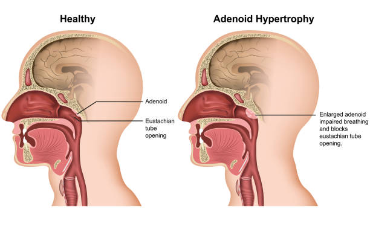

Adenoids and Adenoid Surgery
What are adenoids?
Adenoids are a small mass of immune tissue behind the nose. All children have them. They grow from about 1 year of age, reach their largest size around 7 years, and usually shrink away by about 11 years. So adenoids are normal.
Do adenoids need treatment?
Normal adenoids don't need treatment. We treat them only when they cause disease.
Common adenoid problems
- Adenoid hypertrophy: enlargement that blocks breathing through the nose
- Adenoiditis: chronic infection or inflammation of the adenoids
These cause different problems. Enlarged adenoids mainly cause snoring, mouth breathing and sleep apnoea. Chronic adenoid infection, even when the adenoid is not very large, is what usually causes fluid behind the eardrum and repeated ear infections.
Signs to look for
- Snoring and mouth breathing, the most common signs
- Poor weight gain or slow growth in height, which can be caused by sleep apnoea
- Poor attention, hyperactivity or tiredness, also linked with sleep apnoea
- Hearing difficulty from fluid behind the eardrum, often noticed as poor school performance or a child who is less social
- Repeated ear infections or a constantly runny nose
- Teeth growing out of position
How are enlarged adenoids diagnosed?
With an X-ray of the back of the nose, or a nasal endoscopy in older children.
How are they treated?
The aim is to stop mouth breathing and improve ear function. We first try medical treatment. If it doesn't work, adenoidectomy may be needed.
Won't adenoids disappear by 11 years? Why not wait?
- Normal adenoids shrink by about 11 years. Diseased adenoids may not.
- Sleep apnoea can slow a child's growth in both weight and height during the years of waiting.
- Children naturally breathe through the nose. Normal development of the face, jaw, teeth and sinuses needs nasal breathing.
- Fluid behind the eardrum from chronic adenoid infection reduces hearing, which can affect school performance and how a child mixes with others.
- The longer these problems continue, the greater their effect.
How is adenoidectomy done?
The adenoid is removed through the mouth under direct endoscopic view, so the surgeon can see exactly how much tissue is removed and what is kept. It is usually done as day-care surgery, and most children have little pain afterwards.
"Coblation adenoidectomy" simply means the adenoid is removed with a coblation device, which uses low-temperature plasma energy. A microdebrider (a fine shaver) can also be used, and sometimes both are used together.
Different degrees of adenoidectomy
Adenoid surgery is not the same for every child. We follow a defined, graded protocol, and the amount of tissue removed is planned according to the child's age, the type of disease and the symptoms:
- Partial adenoidectomy: only the bulk that blocks the airway is reduced. Used in very young children, to keep the adenoid's role in immunity.
- Subtotal adenoidectomy: most of the adenoid is removed, keeping a thin layer of tissue.
- Near-total adenoidectomy: almost all the tissue is removed, down to the underlying layer.
- Total adenoidectomy: all the adenoid tissue is removed down to the fascia. Used mainly for chronic adenoid infection and fluid in the ear.
In children with a repaired or at-risk palate, tissue in a specific area is deliberately kept to protect speech and swallowing.
Will the adenoids grow back?
After total or near-total adenoidectomy, regrowth is very unlikely and rarely causes blockage again. After partial or subtotal adenoidectomy, where some tissue is kept on purpose, some regrowth can happen. We'll explain which approach suits your child and why.
Why is tonsil surgery sometimes done with adenoidectomy?
- Enlarged tonsils can keep blocking the airway after the adenoids are removed.
- Tonsils large enough to block the airway can be partly removed with intracapsular tonsillectomy, which keeps the tonsil's capsule and usually means less pain, less bleeding risk and faster recovery.
- Tonsils with repeated infections may need complete (extracapsular) removal.
Read more about tonsil surgery and snoring in children.
Questions patients ask
Common questions from the clinic, with answers written by Dr Rejith R S.
My child snores only when he has a cold. Is that a problem?
Snoring only during colds is usually not a concern. Snoring on most nights, especially with mouth breathing, is worth getting checked.
Will my child need surgery?
Not always. Many children improve with nasal sprays and treatment of allergy, so we usually try medicines first and review. Surgery is advised when breathing, sleep or growth don't improve.
I've been told adenoids disappear by themselves. What happens if my child snores and breathes through the mouth, or keeps getting ear infections or fluid in the ear, and I decide to wait instead of surgery?
Normal adenoids do shrink, usually by about 11 years. But waiting has a cost when a child is clearly affected. Sleep apnoea can slow a child's growth, in both weight and height. Long-term mouth breathing affects how the face, jaw and teeth develop. And a chronic adenoid infection that doesn't settle, rather than the size of the adenoid, causes fluid behind the eardrum. That fluid reduces hearing, which can show up as poor school performance and difficulty mixing with other children. These effects build up over the years of waiting, so when they are present we don't advise waiting.
Will the adenoids grow back after surgery?
It depends on how much adenoid tissue was removed, and that is planned according to the child's age, the type of disease and the symptoms. After a total or near-total adenoidectomy, where the tissue is removed down to the underlying layer (the fascia), regrowth is very unlikely, and it rarely causes blockage again. After a partial or subtotal adenoidectomy, where some tissue is deliberately kept to preserve its function in a young child, some regrowth can happen.
Is adenoid surgery painful?
Most children have little pain after endoscopic coblation adenoidectomy and go home the same day. After tonsil surgery, recovery depends on the type: intracapsular surgery usually means less pain.
Should I send my child's sleep video on WhatsApp?
No, please don't. Record it as described on this page, keep it on your phone, and show it to us in the clinic.
Book a consultation
Call 81390 05150 or message on WhatsApp. See clinics and timings.